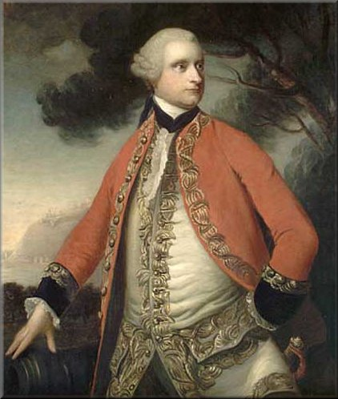
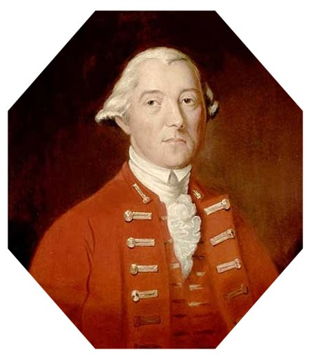
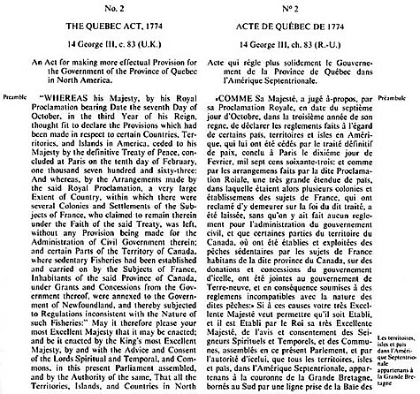
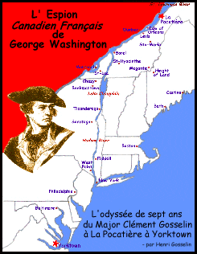
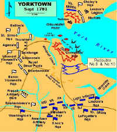
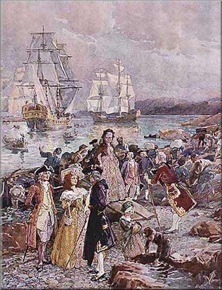
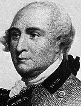

|
LE RÉGIME
ANGLAIS
Depuis la
conquête de 1759, le Canada a eu plusieurs constitutions.
Jean-Baptiste
Chauret, notre ancêtre de la cinquième génération, en a connu trois.
C'est dire qu'il a vécu durant une période
d'ajustements politiques... LA
PROCLAMATION ROYALE
L'ACTE DE QUÉBEC
LA RÉVOLUTION AMÉRICAINE ET LA PROVINCE DE
QUÉBEC
PÉTITIONS ET DÉLÉGATIONS REPRENNENT
LES NOMBREUX AVANTAGES DU RÉGIME ANGLAIS La
Proclamation Royale
Le 10 août 1764, sur la Place
d'Armes de Québec, devant les troupes en armes et une nombreuse
population, la Proclamation Royale est lue. C'est la première
constitution anglaise dont est dotée la colonie qui s'appelle
maintenant "Province of Quebec". Débute alors le régime
anglais...
 Le
nom de Canada disparaît des cartes et la structure administrative est
simplifiée en réduisant les trois gouvernements de Québec, Trois-Rivières
et Montréal en un seul, situé à Québec. James Murray est le
Gouverneur, il doit appliquer le 88 articles de la Proclamation touchant
tous les secteurs de l'activité gouvernementale.
Le
territoire est cependant plus restreint; il se limite à la zone habitée
par les Canadiens dans la vallée du Saint-Laurent. On en exclut les
Grands Lacs et le lac Champlain. Le Labrador et la Côte Nord sont,
quant à eux, rattachés à Terre-Neuve. Tout ce qui ne fait pas partie
des colonies est entre les mains des Amérindiens qu'on tente de
rassurer en leur laissant de vastes territoires. On espère qu'ainsi ils
ne reprendront pas les armes contre les Britanniques.
Murray forme un conseil de 12 personnes qu'il choisit parmi
les 250 habitants d"origine britannique que compte la colonie à ce
moment. Pour exercer une fonction importante dans l'administration
publique il faut passer le serment du Test, les catholiques sont
donc exclus en partant. Murray, et plus tard Carleton, accorde quand
même certains postes à des Canadiens, sans les assermenter. Il est à
noter que, pour être fonctionnaire, même sous le régime français, il
fallait faire serment de fidélité à la Couronne et à la religion
catholique. Dans une colonie anglaise, il faut démontre son
anglicanisme et son protestantisme, c'est le serment du Test.
Dans le domaine judiciaire, la cour martiale est remplacée
par une cour civile qui doit administrer la Common Law. Mais dans les
faits, la Coutume de Paris continue d'exister pour simplifier la
justice.
 Les Canadiens français et les Britanniques doivent apprendre à vivre ensemble.
Pour ces derniers, ce n'est qu'une question de temps pour que les
premiers soient assimilés. Les Canadiens français et les Britanniques doivent apprendre à vivre ensemble.
Pour ces derniers, ce n'est qu'une question de temps pour que les
premiers soient assimilés.
C'est une période de frictions et d'ajustements entre les Canadiens, les autorités et les
marchands britanniques.
Ces derniers, pourtant peu nombreux, font une campagne de dénigrement
contre le gouverneur Murray jugé trop conciliant pour les vaincus. Ces
marchands présentent une nouvelle pétition au roi où ils accusent
Murray de "les traiter avec rudesse... d'être partial avec les
Canadiens... de ne pas assister au service religieux..." En un
mot, d'être un French Party.
 Les accusations des marchands britanniques
provoquent le rappel du gouverneur
Murray à Londres. Il se disculpe mais est remplacé par Sir Guy
Carleton en 1768.
Carleton comprend rapidement que le fait de satisfaire aux
demandes des marchands, non seulement aggraverait le chaos sévissant déjà,
mais encore déclencherait une plus grande hostilité chez les Canadiens français.
Un autre sujet de désaccord entre Carleton et les marchands
est leur demande
d'une Chambre d'assemblée élue. Ils espèrent ainsi contrôler l'adoption des
lois et de la taxation. Ils sont influencés par l'agitation qui secoue
les colonies de Nouvelle-Angleterre et leur slogan "No
taxation without representation". Les marchands britanniques de
la province de Québec adhèrent à ce principe, à condition d'être
les seuls citoyens éligibles à être élus à cette assemblée.
Pour eux, les Canadiens sont sujets britanniques depuis trop peu de
temps pour détenir le privilège de devenir députés. Ils sont encore
trop attachés au Pape et ne connaissent pas assez les lois et coutumes
britanniques.
Mais ce serait remettre le sort des Canadiens entre les mains
d'une infime minorité anglophone. Les dirigeants britanniques étudient
diverses options, tout en rejetant l'exclusion complète des Canadiens
des postes de députés. Les marchands s'impatientent, 31 d'entre eux,
dont James McGill et John McCord, signent en décembre 1773, une
pétition demandant l'établissement immédiat d'une chambre de
députés. Devant
l'évolution alarmante de la situation des colonies de
Nouvelle-Angleterre les Britanniques reportent l'approbation d'une
Chambre d'assemblée dans la province de Québec, et ce même si la
Nouvelle-Écosse a la sienne depuis 1752.
Tandis que le débat sur ces questions se poursuit, des rapports et des opinions
sont commandés. Les habitants canadiens-français et les commerçants
britanniques exercent également des pressions de couloir pour revendiquer
leurs propres positions.
Finalement, les circonstances obligent le gouvernement
anglais à prendre position sur les problèmes canadiens, non pas tant
par bonté, mais pour "aider" les Canadiens à demeurer
fidèles à l'Angleterre.
Retour vers le haut
L'Acte de
Québec
"Je
croirais essentiel de ne pas rendre aux Canadiens leurs lois; elles
maintiendront leur perpétuel recours à ces lois et coutumes qui
continuera à faire d'eux un peuple distinct", déclare un
député anglais opposé à l'adoption de l'Acte de Québec.
Mais le gouvernement anglais, "l'œil fixé non sur Québec mais
sur Boston" rédige l'Acte de Québec, voulant se concilier les
Canadiens. Il a besoin d'eux, et doit se les attacher.
Le 22 juin 1774, malgré une
vive opposition et une
manifestation des Londoniens sur le passage du roi George III qui se
rend au Parlement, le Quebec Bill reçoit la sanction royale. Le
roi déclare: "Les circonstances particulières et
embarrassantes dans lesquelles la province de Québec était
enveloppée, avaient rendu l'accommodement et le règlement du
gouvernement de celle-ci une matière de grande difficulté. Le Bill que
vous avez préparé pour ce sujet, et auquel je viens de donner mon
consentement, est fondé sur les plus clairs principes de la justice et
de l'humanité; et je ne doute pas qu'il ne produise le meilleur effet
pour tranquilliser les esprits et avancer le bonheur de mes sujets
canadiens."

Cette
nouvelle constitution touche quatre points principaux:
- Les limites du territoire du Québec sont
considérablement élargis
pour satisfaire les marchands anglais, et contrecarrer la puissance croissante
des colonies anglo-américaines.
- L'administration de la colonie est confiée
à un gouverneur aux pouvoirs illimités, qui nomme un Conseil législatif d'une
vingtaine de membres, nommés par le gouverneur. Aucune chambre d'Assemblée
n'est toutefois accordée
- L'Acte de Québec protège la religion
catholique. Le serment du Test, qui empêchait les catholiques
d'accéder à la fonction publique et à l'administration de la
province, n'est plus exigible et est remplacé par un serment plus
acceptable pour les Canadiens.
- Il protège aussi les lois
françaises, au niveau civil. La loi anglaise s'applique
seulement dans le domaine criminel,
ce dernier point étant un gros avantage pour la population.
 Les marchands britanniques de Québec subissent un revers avec ce
nouvel acte, qui ignore leurs demandes les plus importantes. Ils
continuent néanmoins à faire campagne afin de supprimer le code
civil français et et établir une chambre d'assemblée excluant les
catholiques et les francophones. Les marchands britanniques de Québec subissent un revers avec ce
nouvel acte, qui ignore leurs demandes les plus importantes. Ils
continuent néanmoins à faire campagne afin de supprimer le code
civil français et et établir une chambre d'assemblée excluant les
catholiques et les francophones.
Et la langue française? Il n'en
est fait aucune mention...
En assurant le droit aux
"coutumes et usages" l'Acte de Québec rend, par le fait même, le français quasi
officiel. D'ailleurs le français est alors la langue internationale de
communication, la Cour de Londres le parle couramment, les hauts
fonctionnaires anglais de la province de Québec sont bilingues, ainsi
que les classes supérieures de la société. On ne voit pas la
nécessité de consacrer à la langue une clause particulière dans les
traités.
Les Anglais sont-ils tombés sur
la tête?
Pourquoi les Anglais ont-ils tenu
tant que cela à l'Acte de Québec, alors que toute leur population y était
opposé? Uniquement pour des raisons d'État. En fait, surtout dans les articles concernant la religion
et les lois civiles, les historiens remarquent combien la préoccupation
réelle du roi George III était de limiter l'étendue d'application des
lois civiles françaises et de restreindre le plus possible les droits religieux.
Ce que l'on a appelé la Grande Charte des droits des Canadiens
français n'est en fait qu'une concession que l'on souhaite limitée
dans le temps et l'espace.
Sans la révolution américaine, le Parlement britannique aurait attendu
longtemps avant de concéder des droits aux nouveaux sujets de la
province de Québec. Mais, grâce à cette révolution, les Canadiens français ont obtenu des droits
primordiaux leur
permettant d'être un peuple distinct en Amérique. Leur combat pour la
survie et la reconnaissance de leur identité débute alors, et ne
semble pas près de se terminer. Pour plusieurs historiens, l'Acte
de Québec en a jeté les bases, le Parlement
britannique n'a pas pu revenir en arrière par la suite sur plusieurs
des droits accordés aux
Canadiens.
Retour vers le haut
La
révolution américaine et la province de Québec
L'Angleterre, en ayant plein les bras avec ses treize colonies
américaines, fait le pari, par l'Acte de Québec, que les
Canadiens lui resteront fidèles. Et c'est un pari gagnant...
La révolution américaine 1774-1776
 Le
16 décembre 1773, c'est le Boston Tea Party. Le feu est aux
poudres en Amérique... Le
16 décembre 1773, c'est le Boston Tea Party. Le feu est aux
poudres en Amérique...
Les treize colonies anglaises sont très mécontentes de la
Proclamation Royale qui
a suivi le Traité de Paris. Eux, qui ont fait la guerre à la Nouvelle-France
pendant longtemps, estiment qu'ils n'ont
pas reçu assez de la part de l'Angleterre. Les territoires qu'ils revendiquent
ont été remis aux autochtones, et de plus l'Angleterre leur impose des taxes
pour payer la conquête. Révoltés, les colons décident de proclamer l'indépendance
des États-Unis d'Amérique. La guerre d'indépendance américaine débute. L'Acte
de Québec de 1774 mécontente les représentants des colonies de
Nouvelle-Angleterre qui demandent le rappel pur et simple de cet Acte.
Durant leur révolution, le Congrès américain entre en
contact direct avec les Canadiens. Les délégués du congrès écrivent
deux lettres, Lettre aux habitants de la province de Québec et Lettre
aux habitants du Canada, les invitant à prendre part à la
révolution et à élire des députés qui les représenteront lors du
prochain congrès général "de ce continent qui doit ouvrir ses
séances à Philadelphie le 10 mai 1775".
Les deux lettres circulent parmi la population. Au cours de l'hiver
1774-1775, des marchands anglais parcourent les campagnes pour faire
valoir des arguments en faveur de la cause américaine. À Montréal,
des assemblées secrètes se tiennent.
| Rédigée en français pour convaincre les Canadiens de se
joindre au projet d'indépendance des Américains, cette lettre
dont Mesplet est l'imprimeur insiste sur le droit légitime des
Canadiens à un gouvernement démocratique : « le
peuple a part dans son gouvernement par ses représentans
choisis par lui-même et est par conséquent gouverné par des
loix de son approbation et non par les édits de ceux sur
lesquels il n'a aucun pouvoir ». L'adresse évoque
d'autres droits légitimes : procès avec jury, habeas
corpus, droit de propriété, liberté de presse, Chambre
d'assemblée, pouvoir de taxation, séparation des pouvoirs. Le
texte invite les Canadiens à s'unir « à une cause si
juste », et conclut en leur rappelant que « votre
Province est le seul anneau qui manque pour compléter la chaîne
forte et éclatante de leur union ». |

Lettre
addressée aux Habitans de la Province de Québec, Ci-devant le
Canada, De la part du Congrès Général de l'Amérique
Septentrionale, tenu à Philadelphie, Imprimé & publié
par ordre du Congrès, à Philadelphie, De l'imprimerie de
Fleury Mesplet, 1774
|
Le 22 mai 1775, l'évêque de Québec Jean-Olivier Briand
émet un mandement dans lequel il enjoint les Canadiens à fermer leurs
oreilles à l'appel des "rebels" et de défendre leur pays et
leur roi contre l'invasion. Bien que les Anglais et les révolutionnaires réussissent à
recruter quelques centaines de canadiens pour la milice, la majorité de la
population fait le choix de rester neutre dans le conflit.
Les Américains Arnold et Montgomery
envahissent le Québec, l'invitation écrite n'ayant pas eu de suite, ils
tentent la force. Ils s'emparent de Montréal le 10 mai 1775, puis de
Trois-Rivières, et assiègent Québec dans la nuit du 31 décembre. Montgomery
est tué et Guy Carleton sauve la ville.
Si les porte-parole officiels des Canadiens
français se montrent loyaux envers la Couronne britannique, il semble que le peuple ne
manifeste aucun enthousiasme pour soutenir la cause du roi d'Angleterre.
 En
1775, le congrès de Philadelphie envoie trois délégués pour
solliciter l'appui de la France. Parmi eux, Benjamin Franklin, qui
remporte un succès sans précédent. Une alliance franco-américaine
s'ensuit quelques années plus tard, entre autres, grâce au travail de La
Fayette, et d'intellectuels français comme Beaumarchais qui croient
à la liberté des peuples en ce 18ème siècle, celui "des
lumières". En
1775, le congrès de Philadelphie envoie trois délégués pour
solliciter l'appui de la France. Parmi eux, Benjamin Franklin, qui
remporte un succès sans précédent. Une alliance franco-américaine
s'ensuit quelques années plus tard, entre autres, grâce au travail de La
Fayette, et d'intellectuels français comme Beaumarchais qui croient
à la liberté des peuples en ce 18ème siècle, celui "des
lumières".
Le 1er juin 1776, un renfort militaire anglais
irlandais, et des mercenaires allemands,
arrivent à Québec sur trente-six navires. Ils mettent en
fuite les Américains qui se retirent du Canada.
Le 4 juillet, jour de la déclaration d'Indépendance américaine.
 En 1778,
Frederick Haldimand, un suisse francophone, devient gouverneur en replacement de Guy
Carleton. En 1778,
Frederick Haldimand, un suisse francophone, devient gouverneur en replacement de Guy
Carleton.
Le 28 octobre, l'amiral français Charles-Henri, comte d'Estaing, publie un
manifeste dans lequel il propose aux "Français d'Amérique" de
s'allier aux États-Unis dans leur lutte. Il compte sur l'appui des Canadiens
qui veulent que le leur pays redevienne colonie française. Distribué clandestinement et affiché à la porte de
quelques églises, le manifeste provoque la colère du nouveau gouverneur.
Mais, en réalité, la France n'est pas intéressée par son
ancienne colonie. Il vaut mieux pour elle que l'Angleterre garde le
Canada. Ce qui intéresse avant tout la France, c'est l'accès au marché économique des
nouveaux États-Unis.
Cette année-là, Fleury Mesplet fonde la Gazette littéraire de Montréal, premier journal
montréalais.
| On doit à Mesplet, imprimeur du Congrès américain, ce
premier journal unilingue français du Québec qui, dès sa création
à l'été 1778, s'engage dans la diffusion des Lumières. Avec
le journaliste Valentin Jautard, Mesplet fait de cet
hebdomadaire un lieu de débats et de contestation, mais aussi
un outil pédagogique offert aux étudiants du Collège de Montréal.
Durant sa courte année d'existence, la Gazette de Montréal commente
notamment la mort de Voltaire et la création d'une « Académie
voltairienne » à Montréal. Tout en discutant de
sciences, d'éducation, de lettres et de philosophie, Jautard
invite ses lecteurs à lui envoyer des poèmes qu'il commente et
corrige sous le pseudonyme de « Spectateur tranquille ».
Avec Pierre du Calvet, il s'attaque aux juges Rouville et
Southouse : en juin 1779, les journalistes sont emprisonnés,
ce qui met fin à cette aventure intellectuelle. |
 |
 Certains
Canadiens,
comme Clément Gosselin, travaillent depuis plusieurs années pour la cause américaine et
espèrent que leurs concitoyens vont se joindre à leur lutte contre
l'Angleterre. Gosselin est un espion pour
le compte de Washington, lui et 200 miliciens canadiens participent
aux batailles avec l'armée de LaFayette. L'alliance franco-américaine
crée de faux espoirs chez ces gens qui rêvent que la France reprenne le
Canada.
La moitié de l'armée
américaine à la bataille deYorktown était française! Gosselin
paya cher son engagement à la cause américaine, il a été excommunié et fut
blessé en commandant une unité d'artillerie dans la bataille finale de la
révolte américaine. Il reçut de la part d'un congrès reconnaissant 1 000
acres de terre sur la rive ouest du lac Champlain, au nord du New York. Mais
il ne put jamais revenir vivre dans son pays d'origine.
|

Les positions militaires durant la bataille finale de la guerre
d'indépendance américaine |

Yorktown, Virginie. Monument
rendant hommage, en français, aux centaines de soldats et marins
français qui ont donné leur vie pour l'indépendance des États-Unis.
|
En 1783 le Traité de Versailles
met fin à la guerre d'Indépendance américaine et leur cède le territoire au
sud des Grands-Lacs.
Retour vers le haut
Pétitions et délégations reprennent

Montréal, vue du Mont-Royal en 1784
Peu après la fin de cette guerre, la question constitutionnelle
refait surface dans la province de Québec. Le 24 novembre 1784, une pétition pour une chambre d'assemblée,
signée cette fois par 1436 "nouveaux sujets" (des Canadiens)
et 855 "anciens sujets" (les Anglais), est envoyée au
roi de la Grande-Bretagne. D'autres documents, avec des opinions
différentes, suivent les mois suivants. La ronde des pétitions et
pamphlets prônant les différentes opinions recommence. L'objection générale à la Chambre
d'assemblée est que la colonie n'est pas en position de se faire
taxer.
 Lorsque la pétition du 24 novembre
est soumise au roi, de
nombreux Loyalistes cherchent déjà refuge dans la province de Québec.
Ces colons nouvellement arrivés contribuent à augmenter le nombre de personnes favorable à une réforme
constitutionnelle rapide. Cette arrivée massive des
Loyalistes, 25 000 américains fidèles à l'Angleterre,
changent les données démographiques. Ils s'établissent surtout au Nouveau Brunswick, en
Ontario, et, 8 000 d'entre eux, dans les
Cantons de l'Est.
En 1784 la population de la
province de Québec est de 113 012 habitants.
Des partis politiques se sont
formés au début du régime anglais. En 1784, le French Party se divise et n'exerce plus
son ancienne influence au Conseil législatif et au sein de l'administration.
Ses membres canadiens n'acceptent plus le leadership de Mabane et forment ce
qu'on peut appeler un parti canadien aristocratique. Le British Party devient plus agressif.
Un parti canadien démocratique commence à
s'organiser. Ses dirigeants collaborent avec le British Party au sein de Comités
de Citoyens favorables à une réforme constitutionnelle. En 1785, c'est la
fondation de la Montreal Gazette.
 En
octobre 1786, Carleton revient comme
gouverneur. Il porte maintenant le titre de Lord Dorchester et sa pensée
politique n'est plus celle de 1767-1774 mais il demeure prisonnier du passé
qu'il a lui-même façonné.
Il sait que l'arrivée des loyalistes obligera à
des changements constitutionnels. Le 20 octobre 1789, le Secrétaire de
l'intérieur Grenville écrit une lettre privée et secrète
au gouverneur Dorchester pour l'informer des plans que les conseillers
du roi ont élaborés pour modifier la constitution du Canada. La lettre
laisse peu de doute quant à l'influence que la guerre d'indépendance
américaine et la prise de la bastille, le 14 juillet précédent, ont eue sur la décision de Londres.
Dans le premier paragraphe, Grenville écrit : "I am
persuaded that it is a point of true Policy to make these Concessions at
a time when they may be received as matter of favour, and when it is in
Our own power to regulate and direct the manner of applying them, rather
than to wait 'till they shall be extorted from Us by a necessity which
shall neither leave Us any discretion in the form, nor any merit in the
substance of what we give."
Donc, une nouvelle révolution, française cette fois, serait
encore favorable aux Canadiens? On voudrait éviter qu'ils imitent leurs
voisins américains, ou leurs anciens concitoyens français?
En 1791, le parlement britannique donne à sa colonie d'Amérique, la
seule qui lui reste au nord de ce continent, une nouvelle constitution, l'Acte Constitutionnel. Nous verrons
cela de plus près sur le site web de la génération suivante....
Retour vers le haut
Les nombreux avantages
du Régime Anglais
(extraits de Mythes et
réalités dans l'histoire du Québec, de Michel Trudel)
Se
retrouver sous domination étrangère est toujours une tragédie pour un peuple.
Pour les Français qui sont ici pour le service du roi, de l'Église ou
à des fins commerciales, la Conquête signifie une menace d'exil, s'ils
font le choix de demeurer au pays.
Mais pour les Canadiens, établis depuis quelques générations,
l'exil ce serait plutôt de partir vivre en France. Qu'y deviendraient-ils?
Toute leur vie et leurs biens sont ici.
Leur
sort sera affecté
par le changement d'administrateur, et ce dès le régime militaire,
comme nous l'avons déjà vu, mais pas toujours
à leur désavantage.
Similitudes entre
les deux sociétés
En ne
retenant que les suites négatives de la Conquête, les historiens n'en
ont transmis qu'une vision pessimiste pendant plus de deux siècles,
gardant du Régime français un tableau idyllique ou s'inspirant d'un
nationalisme revendicateur. Mais, dans les faits, l'écart entre les deux
sociétés anglaise et française n'est pas tellement large et le passage
des Canadiens d'une société à l'autre n'est pas un drame
total.
Mis à part
le schisme qui le sépare de Rome, le roi d'Angleterre, qu'entoure une
élite qui s'exprime couramment en français, n'est pas tellement
différent du roi qui règne à Versailles. La colonie canadienne se
maintient dans une société monarchique chrétienne. La religion est le
point le plus sensible mais, en France comme en Angleterre, les dogmes
sont encore presque tous ceux du 16ème siècle et le rituel n'a pas
encore évolué, donc anglicans et catholiques ont quasi la même pratique
du christianisme.
Autre point
commun: dans les deux sociétés, l'Église est soumise à l'État. Le roi
nomme l'évêque et lui verse une pension. Dans l'une comme dans l'autre,
tout fonctionnaire religieux ou civil doit prêter serment. Chez les
Anglais, c'est le Test; chez les Français, outre un serment de
fidélité à la Couronne, il faut démontrer que notre vie et nos mœurs
sont irréprochables.
Le roi de
France était représenté par un gouverneur-général tiré de l'armée
et assisté d'un état-major; il en est de même du gouverneur anglais. De
sorte que les Canadiens vont trouver tout naturel de vivre encore sous une
autorité militaire.
Les avantages
qu'ont retiré les Canadiens du Régime anglais
-
La fin des guerres
amérindiennes qui ont tant de fois mis les colons en péril.
Suite à la victoire anglaise sur le chef amérindien Pontiac dans la
région des Grands-Lacs en 1763, la hache de guerre est
définitivement enterrée.
-
La société
canadienne s'ouvre d'un coup sur le monde. Jusque là, les
contacts se faisaient seulement avec les Antilles françaises et la
France, à deux ou trois mois de voyage, et, encore, durant la courte
période de navigation fluviale. Le pays demeurait coupé du monde
pendant la moitié de l'année et vivait des pénuries récurrentes de
biens et de numéraire.
Désormais, l'accès aux colonies anglaises par la voie du New-York,
met fin, hiver comme été, à cet isolement. De nouveaux venus
vont infuser un esprit nouveau, des idées et des méthodes nouvelles.
-
Sous le Régime
français, il était interdit de commercer avec nos voisins les
Anglais de Nouvelle-Angleterre. La Conquête donne maintenant accès,
douze mois par année, à un monde immédiat et beaucoup plus vaste:
le marché de l'Empire britannique.
-
La Conquête
remédie à une suradministration qu'avait mise en place une logique
française coûteuse et peu efficace. Les autorités anglaises font un
"grand ménage" dans l'organigramme de la fonction
publique à compter de 1764.
-
Les autorités
anglaises créent une nouvelle institution gouvernementale,
inexistante jusqu'alors, le service postal, dès 1763.
-
De nouvelles mesures
apparaissent, le mille et la verge, simplifiant la vie de chacun.
-
Dans le domaine militaire,
la milice, obligatoire et gratuite jusque-là, devient volontaire et
mérite salaire.
-
Les lois
civiles françaises continuent d'exister. Seuls quelques points
des lois civiles anglaises prévalent sur la Coutume de Paris. Par
exemple, l'âge de la majorité est passé de 25 à 21 ans. Ce qui
fait l'affaire de plusieurs, surtout les jeunes.
-
Les lois
criminelles anglaises s'appliquent dès 1764, à l'avantage de la
population, y compris les honnêtes gens.
Selon le droit criminel en
usage sous le Régime français, l'accusé était privé d'avocat, il
avait la charge de prouver son innocence, sans toujours savoir dès le
début de l'enquête ce qu'on lui reprochait ni quand il
comparaîtrait devant le tribunal.
En vertu du droit britannique, c'est à la Couronne de prouver la
culpabilité; l'accusé, pourvu d'un avocat, sait exactement la
nature de la faute qu'on lui reproche et il est assuré de
comparaître rapidement devant son juge.
Autre avantage de ce droit
criminel: la torture n'existe plus. Au Canada comme en France,
on pratiquait la "question ordinaire" et, dans certains cas,
la "question extraordinaire" pouvant aller jusqu'au bris des
membres, pour avoir un aveu complet. La Conquête nous délivre de
cette justice criminelle.
Une nouvelle carrière s'ouvre, celle du droit. Avant 1760, il n'y a
pas d'avocats. Cela donne naissance à une classe
professionnelle qui jouera un rôle de premier plan dans toutes les
futures luttes politiques.
-
Malgré de
nouveaux concurrents, les familles de traiteurs, qui poursuivent leurs
opérations dans le grand commerce pelletier, obtiennent
des conditions plus avantageuses, puisque les anciens monopoles ont
été abolis. La traite des fourrures continue à bâtir des fortunes,
son importance depuis les débuts de la colonie est primordial.
Beaucoup de riches domaines et châteaux en Europe ont été
construits grâce à l'argent des fourrures. À Montréal,
l'Université McGill, la Banque de Montréal, le chemin de fer et
beaucoup d'autres constructions et institutions sont le résultat de
l'argent amassé dans le commerce des fourrures.
-
Sous le Régime
français, autoritaire et paternaliste, les Canadiens ne pouvaient
avoir des groupes de pression. Il fallait demander la permission avant
de présenter une pétition ou une délégation, sinon ils étaient
poursuivis comme émeutiers.
Intégré à la société britannique, pour qui l'autorité vient du
peuple, les Canadiens ont toute liberté de présenter pétitions et
délégations. Avant la fin du siècle, ils auront un système
parlementaire, eux qui n'avaient élu jusque-là que des
marguilliers.
Sous le nouveau roi, les Canadiens ont acquis droit de parole, et
ne se priveront pas pour s'en servir..
-
Les Canadiens
ont perdu beaucoup d'argent avec les guerres, la milice obligatoire,
le non-remboursement de la monnaie de carte par la France. Il
ressentent maintenant une sécurité qu'ils n'avaient pas connue
souvent. Le numéraire ne manque plus jamais. Le prêt
à intérêt, qui était interdit par l'Église, est maintenant
permis.
-
Le marché
immobilier est très animé après la Conquête. Ceux qui partent en
France doivent vendre leurs biens, et ceux qui restent font de bonnes
affaires.
Jusque-là la société canadienne n'avait qu'une façon de détenir
la terre: celle du régime seigneurial. Les colons ne sont en fait
que des concessionnaires. Le gouvernement anglais laisse en
place le système seigneurial, mais introduit une deuxième façon de
détenir la terre: au-delà des limites des seigneuries, des lots de
terre sont accordés dont les Canadiens deviennent les véritables
propriétaires, sans les devoirs contraignants du régime seigneurial.
-
Dans un rapport
de 1762, Murray s'étonne que les habitants "ne s'entendent
pas très bien en agriculture et sont peu soucieux d'accumuler
au-delà des besoins du moment". Sous le Régime français,
les famines étaient fréquentes et les Intendants se plaignaient
souvent dans leurs rapports du mauvais état de l'agriculture.
Le cheptel d'origine avait bien déchu, faute de croisement de races.
Les Anglais arrivent avec un cheptel de qualité. Ils vont habituer
les Canadiens à étendre le fumier sur leurs terres pour les
engraisser plutôt que le jeter à la rivière. Ils apportent des
grains de semence mieux adaptés. Ils introduisent, entre autres
outils, le javelier et le joug de garrot. Ils s'appliquent beaucoup
mieux que les Canadiens à obtenir un produit meilleur et plus
abondant. En 1789, les autorités mettent en place la Société
d'Agriculture du Canada pour améliorer l'exploitation de la terre et
créer un esprit d'émulation.
-
À la liste des
avantages s'ajoutent deux éléments capitaux dans une société: l'imprimerie
et la gazette. La colonie française n'avait pas eu droit à
l'imprimerie malgré un siècle et demi d'existence et de nombreuses
demandes en ce sens. Pourtant au Mexique on imprimait des livres
depuis 1540 et au Massachusetts depuis 1640. En 1764 la Gazette de
Québec, journal bilingue de quatre pages soutenu par cent
quarante-trois abonnés, est publié. En 1765 des imprimeurs
américains Brown et Gilmore font paraître le premier livre imprimé
au Canada, un Catéchisme.
Sous le Régime français, pas non plus de bibliothèque
publique. En 1778 le gouverneur Haldimand installe à Québec la
première bibliothèque, elle est bilingue.
-
Les habitudes
alimentaires des Canadiens changent. Ils mangent moins de porc et plus
de bœuf, ce dernier n'étant plus seulement un animal de trait. On
mange aussi de la dinde, avec des canneberges. On adopte une nouvelle
boisson, le thé, qui n'était avant qu'une potion médicinale.
Dans ce même domaine de l'alimentation, les Canadiens
profitent d'un adoucissement des règles de l'abstinence et du gras
émises par l'Église. Sous le Régime français, faire gras,
c'est-à-dire manger de la viande, était
interdit environ cent cinquante jours par année. Maintenant ces jours
sont moins nombreux et, nouveauté considérable, on permet de faire
gras les dimanches du Carême.
-
Sous la pression
du milieu anglais et protestant, l'église diminue le nombre de
fêtes chômées. Tout compté, les dimanches, les fêtes d'obligation
et les fêtes patronales, le cinquième de l'année était chômé. Et
c'était sérieux, par exemple, pas question de couper les foins ces
jours-là, même si c'était le temps idéal pour la météo. Sous le
nouveau Régime, la productivité augmente.
-
La célébration
de Noël a subi l'influence de mercenaires allemands qui, en 1776,
apportent l'arbre de Noël. Dans les loisirs, la Conquête
ouvre chez nous le théâtre que le rigorisme religieux avait fermé
depuis Mgr Saint-Vallier. Des officiers de l'armée britannique
remettent le théâtre en activité, en jouant surtout des pièces en
français. Notre folklore s'enrichit de danses "callées".
-
Stimulée par la
pression d'une autre religion, l'Église retrouve sa
dynamique du 17ème siècle, elle accepte la coexistence et montre la
tolérance. Elle a subi avec profit des mesures qui l'ont délivrée,
elle et ses communautés d'hommes, de la tutelle des autorités de
France, mesures qui ont accéléré sa canadianisation, facilité et
ramené l'unité dans le diocèse. Mesures qui l'ont mises en
lien direct avec la Papauté, ce qui aura beaucoup d'influence sur la
vie religieuse des deux siècles suivants.
-
Dans le domaine
de la construction on se sert de plus en plus de la brique
anglaise, plus grosse que le matériau français. Un style fait son
introduction: le toit à quatre eaux (ou pentes) dit
"anglo-normand", le toit à deux eaux n'est plus le seul
dans le paysage.
|

Cottage anglo-normand, au Lac St-Augustin,
comté Portneuf
|

Maison Lorrain, 1ère moitié du 18ème siècle,
Laval-Des-Rapides, Île Jésus
|
Retour vers le haut
Fermer cette fenêtre
|